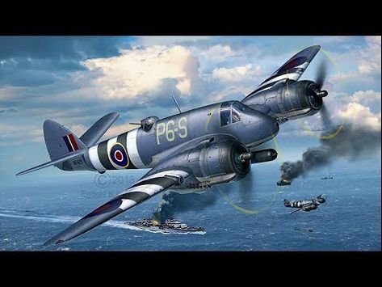
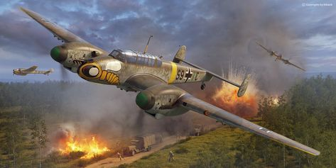
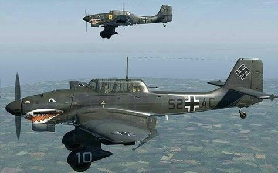

Le de Havilland Mosquito (ou « Moustique », en rappel de la fonction de harcèlement initialement prévue pour cet appareil) est un avion multirôle britannique qui s'est distingué en tant que avion d'attaque au sol
Le Bristol Beaufighter fut un avion de combat britannique utilisé pendant toute la Seconde Guerre mondiale. chasseur nocturne, chasseur-bombardier, bombardier-torpilleur, avion d'attaque au sol, il servit brillamment dans tous ses rôles et sur tous les fronts.
Le Messerschmitt Bf 110 (appelé ensuite Me 110) était un avion d'attaque au sol et un chasseur moyen bimoteur allemand, en service dans la Luftwaffe pendant la Seconde Guerre mondiale.
Le Junkers Ju 87 est le plus connu des bombardiers en piqué de la Luftwaffe employé durant la Seconde Guerre mondiale en allemagne.
pour retourné au menue ;)